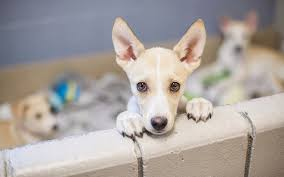
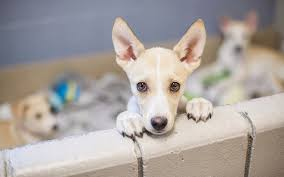

projeto: amar e adotar são sinonimos
adotar um bichinho é um ato de amor que traz alegria na sua vida e também na do proprio pet,por isso criamos esse progeto para alegrar todos que precisão de um amigo de um parceiro de uma compania.
adotar um bichinho é um ato de amor que traz alegria na sua vida e também na do proprio pet,por isso criamos esse progeto para alegrar todos que precisão de um amigo de um parceiro de uma compania.
